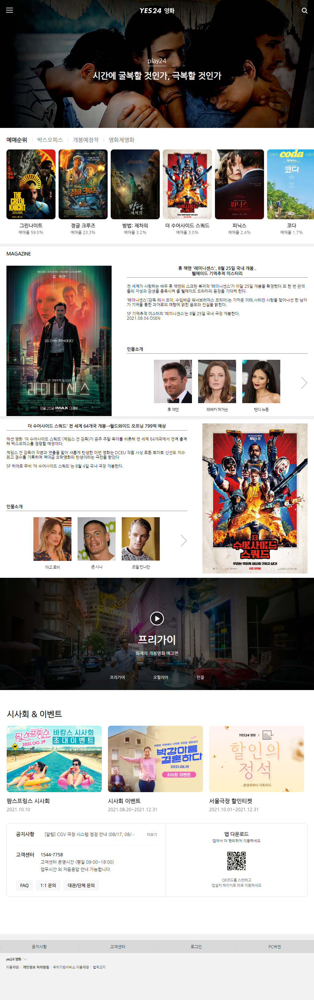
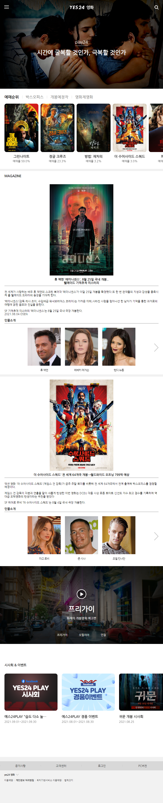
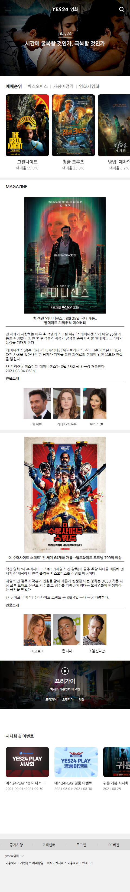

김근후
KIM GEUN HOOGRADUATION
2015.03~2017.02 백제예술대학교EDUCATION
2021.05~10 UI/UX 웹디자인&웹퍼블리셔 수료WORK
2022.04~2023.08 SD에듀(퍼블리싱)SKILLS


웹표준에 맞게 문서의 마크업이 가능하며, sass,scss 전처리기를 통한 스타일 구현 가능합니다. 함수형 코드로 중복된 코드를 개선할 수 있고, 제이쿼리 플러그인을 이용해 외부 스크립트를 사용할 수 있습니다.
제가 생각하는 퍼블리셔 직무에 있어서 중요한 부분은 퍼블리싱 실력 뿐만 아니라 팀원과 소통하는 부분이고, 이를 통해 좀 더 나은 방향성을 가지고 업무를 해결할 수 있다고 생각합니다.
1) 퍼블리셔를 꿈꾸게 된 계기
대학생 때 학과 특성상 협업을 많이 할 수 밖에 없는 상황들을 겪으면서 협업의 중요성을 알게 되었고,
사무회사에서 잠시 동안이지만 문서의 가독성과 목차를 다루는 업무를 하면서 사용자 경험 디자인인 UX,UI에 관심을 갖게 되었고 그러던 중 웹퍼블리셔라는 직업을 접했습니다.
그때부터 관심을 가져 독학을 시작했고 더 늦기 전에 해보고 싶은 것에 도전하고자 다니던 회사를 그만두고 웹퍼블리셔를 준비하게 되었습니다.
2) 퍼블리셔로의 여정
'UI/UX 웹디자인 & 웹퍼블리셔' 6개월 과정을 거쳐 HTML,CSS, JavaScript를 학습했습니다.
이후 시대에듀라는 회사에서 퍼블리싱 업무를 수행하며 실무 경험을 쌓았습니다. 프로젝트를 진행하면서 HTML, CSS, JavaScript를 활용하여 다양한 웹 페이지를 개발하고, UI/UX 디자인과 웹 개발의 조화를 이루어 사용자가 웹 사이트를 보다 효과적으로 이용할 수 있도록 팀원과 소통하며 프로젝트를 해결해 나갔습니다.
홈페이지의 가장 큰 목적이 '영화 정보 및 영화 티켓 예매'이므로 티켓 구매유도와 영화관련 정보를 쉽게 습득할 수 있는 UI/UX로 설계했습니다.
각 버튼을 hover 할 때, 버튼의 색상이 바뀌게 디자인하여 클릭을 유도했습니다.
또한, 자바스크립트를 이용해 동적구현을 하여 사용자의 편의성을 높였습니다.
전체적인 디자인 컨셉은 심플하고 단정한 느낌이 전달되도록 디자인 하였으며, 반응형 디자인을 통해 각 디바이스 마다 가독성 및 편의성을 고려해 디자인 하였습니다.
Key Word 정적인 ,심플한, 단정한, 정돈된사용자에게 친숙한 서체인 Nanum Gothic를 이용했습니다
Skill Point반응형 페이지로 디바이스의 크기에 따라 메뉴바와 컨텐츠의 레이아웃이 최적화 되도록 구성했습니다.
영화 관련 사이트 특성상 다양한 컨셉의 영화홍보물이 많으므로 컨텐츠가 돋보일 수 있게 단정하고 심플한 느낌이 드는 색깔을 선정했습니다.

1024px
860px
480px
가로길이 1024px에서는 gnb 부분을 축약하여 햄버거 버튼을 누르면 팝업형식으로 나오는 방법으로 구현하였습니다.
가로길이 860px에서는 'maga'부분의 배치를 새로배치로 구현하였습니다. 하단 공지사항 부분과 푸터 부분을 축약하여 구현하였습니다.
가로길이 480px에서는 전체적인 폰트사이즈와 하단 이벤트 부분 자동슬라이드를 수동슬라이드로 구현하였습니다.
자동차 홈페이지를 찾는 사용자들을 조사해 본결과 자동차 모델,가격,제원 등의 정보를 얻기 위함이므로 위 정보를 습득할 수 있는 UI/UX로 설계했습니다.
각 메뉴에 해당하는 관련 정보를 정리 함으로써 가독성과 편의성을 바꿔보았습니다.
자바스크립트를 이용한 동적구현을 통해 자동차의 역동성을 구현하도록 하였습니다.
기존의 사이트는 정보를 직관적으로 알기 어렵고 정보전달력에 있어서 부족함이 보였고, 다이나믹한 이미지에 중점을 둔 이미지를 사용했습니다. 사용자들의 니즈를 파악하여 좀 더 고급스럽고 도시적인 스타일로 디자인 하였습니다.
Key Word 도시적 ,고급스러운, 무거운, 견고한사용자에게 친숙한 서체를 이용했습니다
헤더메세지를 강조하기 위해 굵은 고딕체인 Word Sans를 사용했습니다.
Skill Point자동차에 관련된 정보와 이미지를 자바스크립트를 이용하여 슬라이드 구현을 하였습니다.
고급스러움과 도시적인 느낌을 강조하기 위하여 어두운 바탕의 색상을 선택하여 디자인 하였습니다.

header부분에는 사람들이 가장 즐겨 찾는 메뉴인 차량,구매정보,시승,이벤트 메뉴를 상단왼쪽에 배치하여 기존사이트보다 편의성을 높였습니다.
메인이미지는 폭스바겐 사의 아이덴티티가 나타나는 이미지로 고급스럽고 도시적인 이미지를 구현하였습니다.
best volkswagen부분은 자동차 모델중에 가장인기가 있는 모델을 슬라이드를 기능을 이용해서 구현해 보았습니다.
구매 이벤트와 시승이벤트 부분은 사람들이 가장 많이 찾고자 하는 부분으로 자동차모델의 외관과 실내부를 오퍼서티기능을 이용해서 구현해 보았습니다.
폭스바겐사의 광고영상을 넣음으로서 브랜드가 지니는 가치를 표현하였습니다.
폭스바겐의 최근 소식들을 담은 뉴스들을 슬라이드와 호버시에 관련소식들을 더보기란을 만들어 구현해보았습니다.
footer부분은 회사의 카피라이터와 번호, 관련된 페밀리사이트를 셀렉트기능을 이용해 구현해보았습니다.
리뉴얼 기획 단계에서는 강의 상품에 더 쉽게 접근할 수 있도록 하자는 의견이 주된 포인트였고, 그부분에 맞춰서 기획이 이루어졌습니다.
기존에 자리하고 있던 불필요한 부분들을 삭제 및 수정하고 인기과정, 합격자 발표명단, 강의 후기 등을 통해서 기획의도에 맞게 구현하셨습니다.
header부분은 사용자 이름 호버 시 관련 내용들이 밑으로 내려오게 함으로써 원하는 정보에 빠르게 접근할 수 있도록 구현하였습니다. 또한, 하루동안 접속한 사용자수에 대한 정보를 노출하였습니다.
인기과정 부분에는 자동 슬라이드를 구현했으며, 마우스 호버시 멈춤으로써 사용자가 원하는 정보에 접근하도록 하였습니다.
회사 연혁부분에서는 스크롤시 해당 영역에 오면 숫자가 카운트되는 카운트js를 이용해 구현하였습니다.
분야별 강사소개부분은 플러그인을 사용하여 슬라이드 구현하였고, 수강평은 css 애니메이션으로 구현하였습니다.
합격인터뷰 부분은 css 애니메이션으로 구현하였으며, 호버 시에 멈춤과 스타일변화는 제이쿼리를 이용하여 제어했습니다.
합격자 명단, 합격후기부분은 슬릭슬라이드 플러그인을 이용하여 제어하였습니다.
토크레인 부분은 swiper 플러그인을 사용해 구현하였습니다.
헤더부분에는 메뉴에 마우스 호버시 글자색상과 서브메뉴가 나오게 하였고 로그인버튼을 누르면 로그인팝업창을 만들었습니다. 위 기능은 js를이용하여 구현하였습니다. 메인이미지 부분은 css의 opacity기능을 이용해 3개의 이미지를 구현했습니다.
movie컨텐츠에서는 메뉴를 클릭시 관련 영화컨텐츠가 나오게 하였으며 슬라이드 버튼을 누르면 컨텐츠가 넘어가도록 하였습니다(js사용). 영화컨텐츠 호버시 예매,정보가 나오도록 하였습니다(css의 포지션기능,호버기능,opacity기능).
play부분에는 플레이 버튼을 누르면 동영상이 재생되게 하였으며, 영화 제목을 누르면 관련 동영상 컨텐츠로 바뀌도록 구현하였습니다(jquery사용).
magagine파트는 플렉스기능을 이용하여 배치하였고, 등장인물은 swiper플러그인을 사용하여 구현하였습니다.
이벤트 파트는 해당 정보를 swiper플러그인을 사용하여 슬라이드로 구현하였습니다.